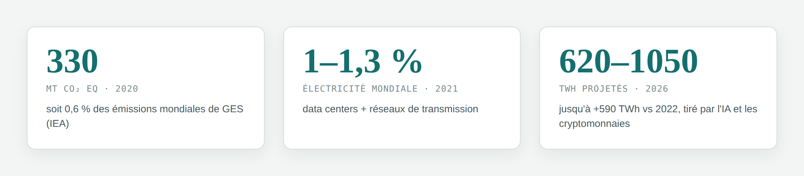

Une croissance énergétique qui ne ralentit pas
L'IEA estimait à 330 millions de tonnes de CO₂ eq les émissions des data centers en 2020 — 0,6 % des émissions mondiales de gaz à effet de serre. En 2021, data centers et réseaux de transmission représentaient déjà 1 à 1,3 % de la consommation électrique mondiale.
Entre 2015 et 2023, la charge de travail a fait grimper leur consommation énergétique de 20 à 40 %. L'IEA projette qu'en 2026, la consommation électrique liée aux data centers, à l'IA et aux cryptomonnaies atteindra 620 à 1050 TWh — jusqu'à 590 TWh de plus qu'en 2022.

Le GHG Protocol classe — mais ne mesure pas tout
L'UE a introduit en 2024 une obligation de reporting énergie/émissions pour les data centers (Energy Efficiency Directive), avec un objectif de neutralité climatique en 2030. Le cadre de référence du secteur reste le GHG Protocol, structuré en trois périmètres :
- Scope 1 — émissions directes (combustibles, groupes électrogènes)
- Scope 2 — électricité, chauffage, refroidissement achetés
- Scope 3 — toute la chaîne de valeur : achats, biens d'équipement, transport, fin de vie
Pour les achats et biens d'équipement (le plus pertinent pour l'IT), quatre méthodes existent, de la plus précise à la plus grossière :
- Supplier-specific
- Hybride
- Average-data
- Spend-based
Plus on descend dans cette hiérarchie, moins la mesure reflète la réalité physique du matériel.
Le Scope 3 échappe au contrôle, le carbone masque le reste
Premier angle mort. La majorité des fabricants ne fournissent pas de données d'émissions spécifiques à leurs produits. Les modèles d'affaires du secteur sont en plus très hétérogènes — colocation (Equinix, CyrusOne) vs cloud intégré (AWS, Azure) — ce qui explique d'énormes écarts de transparence dans les déclarations CDP 2023.

Second angle mort. En se concentrant sur le CO₂, les standards GHG ignorent d'autres impacts majeurs de la fabrication IT — toxicité, eau, épuisement de ressources minérales — qui peuvent être disproportionnés par rapport au poids carbone d'un composant.
| Constat | Conséquence |
|---|---|
| Peu de données produit fournisseur | Recours forcé aux méthodes moyennées (average-data, spend-based) |
| 18 % seulement des entreprises rapportent leur Scope 3 | Empreinte réelle des data centers largement sous-estimée |
| Reporting centré sur le CO₂ | Toxicité, eau, ressources minérales hors radar |
L'hypothèse centrale de l'étude
L'analyse de cycle de vie (ACV / LCA) peut-elle mesurer les émissions carbone avec plus de justesse que les méthodes comptables classiques — et révéler, au passage, des impacts environnementaux que le CO₂ seul ne montre jamais ?
Pour y répondre, l'étude va comparer un modèle ACV empirique aux méthodes average-data et spend-based du GHG Protocol, tester sa robustesse (sensibilité, incertitude), puis explorer des scénarios de décarbonation.